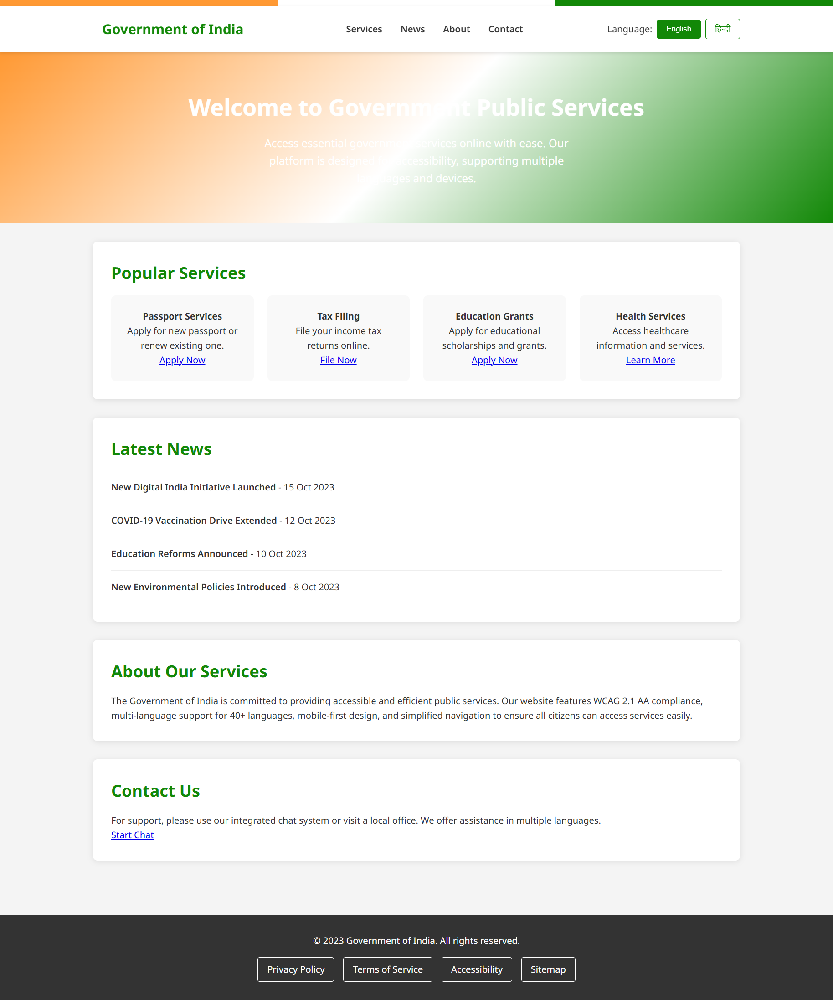

A comprehensive redesign of government digital services focusing on accessibility and inclusive design, achieving 95% WCAG compliance and 300% increase in service completion rates.
This project addressed the critical need for accessible and user-friendly government services. The redesign focused on WCAG 2.1 AA compliance, simplified navigation, and inclusive design principles to serve citizens with varying abilities, languages, and digital literacy levels. Extensive user research with diverse populations and rigorous accessibility testing ensured the solution met the highest standards of digital inclusion.
Full WCAG 2.1 AA compliance with high contrast ratios, keyboard navigation, screen reader support, and alternative text for all content.
Professional translation services supporting 40 languages with RTL support and culturally appropriate design elements.
Responsive design that works seamlessly across devices, with touch-friendly interfaces and offline-capable critical services.
Reorganized information architecture with clear categories, breadcrumb navigation, and intelligent search functionality.
Complex forms broken into manageable steps with contextual help, saving states, and clear progress indicators.
Chat support, FAQ systems, and community forums with human oversight for complex government service inquiries.
The government website redesign achieved remarkable improvements in accessibility and user experience. Online service completion rates increased by 300%, WCAG compliance reached 95%, and citizen service calls reduced by 75%. Task completion times improved by 50%, with a citizen satisfaction rating of 4.8/5, demonstrating the success of inclusive design principles.
Increase in Completion
WCAG Compliance
Citizen Satisfaction